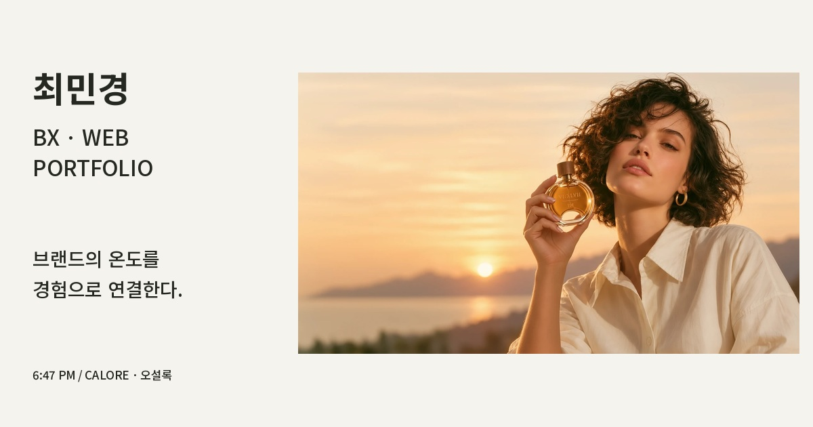

DAY49 / SUBMISSION PACKAGE
브랜드의 온도를
경험으로 연결합니다.
최민경 · BX & WEB DESIGN PORTFOLIO
포트폴리오 소개
브랜드의 이야기와 시각 언어를 디지털 화면으로 이어가는 디자이너 최민경입니다. 6:47 PM / CALORE와 오설록 작업을 중심으로 브랜드의 분위기를 웹과 다양한 시각 접점으로 확장한 과정을 담았습니다. 대표 사례인 6:47 PM / CALORE는 문제 정의부터 리서치, 브랜드 전략, 디자인 결과와 배움까지 살펴볼 수 있도록 구성했습니다.
공유 문구
안녕하세요, 디자이너 최민경입니다. 6:47 PM / CALORE와 오설록 작업을 담은 BX·웹 디자인 포트폴리오를 공유드립니다.
공유용 썸네일

제출 전 확인
현재 배포 준비본입니다. Cloudflare 배포 후 실제 웹 주소와 공유 미리보기를 설정하고, 데스크톱·모바일 및 링크를 최종 확인해야 합니다. 개인 디자인 학습 프로젝트이며 AI 활용 비주얼을 포함합니다. 실제 연락처와 이력서는 연결하지 않았습니다.